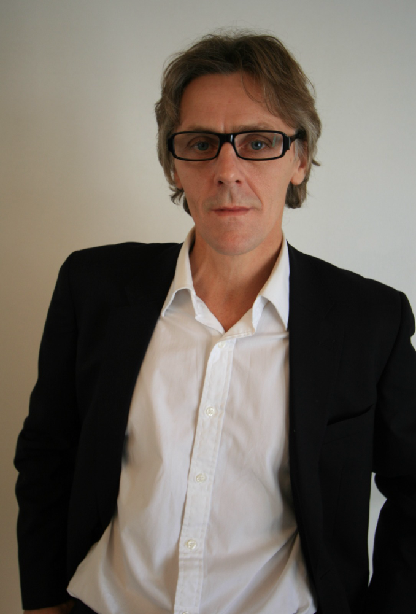

Terris Gemuev Architects is a UK based international architecture and design practice, with studios in Glasgow, Munich and Moscow. The practice is founded on a commitment to high-performance, energy-efficient design and delivers projects across Europe, Asia and beyond.
With more than 35 years of experience in residential, industrial and mixed-use architecture, as well as large-scale masterplanning, the studio provides a comprehensive range of design and development services to a global client base. Collaboration, technical excellence and design quality sit at the heart of every project.
Terris Gemuev Architects was established by Raymond Terris and Shamil Gemuev, following two decades of working together in Russia on complex, multidisciplinary developments. Their shared experience informs a practice culture that values innovation, clarity of thought and the delivery of robust, sustainable solutions.

Raymond Terris is a UK-registered architect with over 35 years of professional experience designing and managing a diverse range of architectural and urban design projects, many of which have been rewarded with national and international awards.
He has over 20 years of experience working in Russia, leading multi-disciplinary, multi-national consultant teams on significant high-profile projects mixed use public/ civic/ residential projects including:
Raymond has both technical and commercial expertise critical to the design process. He specializes in concept/ detail design and delivery. He has a practical approach and enjoys the collaboration process with his clients. He has delivered projects throughout Russia, UK, Europe and Asia.
This experience influences his work and allows him to present highly creative design solutions to a global client base. His portfolio is broad and embraces the masterplanning of city quarters to the remodelling of existing retail developments.
Alongside his directorship at Terris Gemuev Architects, Raymond works within Property and Facilities Management, where he manages and leads multi‑disciplinary teams responsible for delivering building assets for Council services. His remit includes schools, housing, leisure and industrial facilities, with a strong emphasis on innovation, sustainability and whole‑life performance across all RIBA work stages, from feasibility to post‑occupation.
For the past five years, Raymond has also been a part‑time studio tutor at the Scott Sutherland School of Architecture, teaching fifth‑year architecture and technology students.
Before returning to the UK, Raymond held senior leadership roles in Russia, including:
Earlier in his career, he worked in SouthEast Asia (Brunei and Papua New Guinea) and in the UK, contributing to the broad international experience that continues to shape his design philosophy.